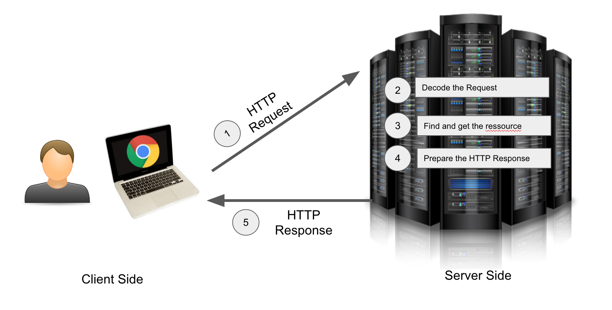

HTTP
HTTP signifie (Hypertext Transfer Protocol), il s’agit d’un protocole de communication entre ordinateurs connectés au réseau internet*. Lorsque nous échangeons avec nos semblables nous utilisons nous même un protocole de communication : il s’agit de notre langue et de notre grammaire. L’Internet dispose aussi d’un langage et d’une grammaire bien déterminée et il s’agit d’HTTP.
Contrairement au français ou comprendre et apprendre la grammaire nécessite un apprentissage long et douloureux, la grammaire du web est définit sous forme de RFC (“request for comments”), il s’agit d’une pléthore de documents décrivant les règles de fonctionnement de notre web. Plus précisément, c’est la RFC 2616 qui définit le fonctionnement du protocole HTTP version 1.1.
Client et Serveur

Sur le schéma précédent nous voyons que les requêtes HTTP sont émises depuis le client. Le client est dans ce cas le navigateur web utilisé (ici Chrome). Ce dernier va envoyer au serveur la requête HTTP (la question). Ce dernier va ensuite traité la requête et renvoyer la ressource correspondante au client.
Les principales caractéristiques du protocole
- Les échanges du protocoles HTTP repose sur TCP/IP qui est une suite de protocoles destinés au transfert de données sur le réseau internet.
- On peut transférer via HTTP n’importe quel type de média ! Que cela soit du texte, du HTML, du JSON, des images, des films (pensez aux sites de streaming qui reposent grandement sur HTTP).
- Le protocole HTTP est sans état, c’est à dire que le serveur ne se souviendra pas de vous entre vos requêtes, d’une certaine façon HTTP n’a pas de mémoire. Et cela lui va très bien (cf REST)
Visualisation d’une requête HTTP
Comment peut on visualiser une requête HTTP dans Chrome ? Rien de plus simple il suffit de :
- Cliquer sur
Afficher - Puis sur
Options pour les développeurs - Puis cliquez sur
outil de développement
Vous verrez s’afficher la fenêtre vous permettant de surveiller l’activité de networking de votre navigateur, autrement dit toutes les requêtes qui sortent de votre machine :

Nous voyons donc ici toutes les requêtes lancées par chrome à la visite du site Le Monde. Et cela en fait un sacré paquet ! En effet les éléments du site sont chargés via HTTP. Souvenez vous, ce protocole est multimédia ! On va y recourir (enfin notre navigateur) pour charger les images, les feuilles de style CSS, les pages HTML, le favicon…
Voici un exemple de requête HTTP.
1 | Request URL:http://www.lemonde.fr/ |
L’URL permet de router notre requête vers le serveur correspondant au site web sur le réseau. Ensuite on précise la méthode, ici il s’agit de GET. La méthode GET est surtout celle utilisée pour charger les images et les pages HTML. Il existe d’autres méthodes, appelées aussi verbes comme POST qui est utilisée notamment pour envoyer les données d’un formulaire sur un serveur. (par exemple pour envoyer votre formulaire d’inscription à Airbnb).
Mais une requête HTTP est aussi composée d’un header dont voici un exemple :
1 | GET / HTTP/1.1 |
Chaque ligne est générée par notre client (notre navigateur web). D’un point de vue développeur il ne faut d’ailleurs jamais se fier au header car ces données peuvent être manipulées avant d’être envoyées et changées à volonté par n’importe quel développeur.
Voici le détail du header avec des explications pour chaque donnée
| Propriété | Description | Exemple |
|---|---|---|
| Host | Il s’agit du nom de domaine du serveur auquel on envoie la requête, on pécise aussi le port si celui-ci n’est pas 80 | www.lemonde.fr |
| Connection | Il s’agit du comportement de la connexion. Ici on va garder la connection TCP ouverte entre le moment entre les requêtes réponses, au lien d’en ouvrir une autre à chaque reprise | keep-alive |
| Cache-Control | Cette propriété indique au cache du serveur s’il doit recharger la page à chaque reprise ou suivant un délai précis. Ici c’est le cas, on doit recharger à chaque fois la page | max-age=0 |
| Upgrade-Insecure-Requests | Indique au client que l’on préfèrera toujours une reconnection HTTPS si jamais celui-ci est en train de migrer entre HTTP et HTTPS | 1 |
| User-Agent | Il s’agit de la chaine de caractère permettant d’identifier formellement le navigateur qui a généré la requête; on y trouve sa version son développeur … Renseignement très intéressant pour le web analytics | Mozilla/5.0 (Macintosh; …. |
| Accept | Indique le type de contenu (de média) que le client est en mesure d’accepter. | text/html,application/xhtml+xml,application/xml;q=0.9,image/webp,/;q=0.8 |
| Referer | Indique la page d’où vient le visiteur. (très utile pour l’analyse de la provenance des visiteurs). Vous noterez la coquille (il manque un r) qui provient directement d’une erreur sur la RFC :) | http://www.lemonde.fr/ |
| Accept-Encoding | Spécifie le type de compression du contenu que le client (le navigateur) peut traiter. Le contenu est en effet souvent compresser pour optimiser le temps de transfert ! | gzip, deflate, sdch |
| Accept-Language | Spécifie quel langage le client accepte | fr-FR,fr;q=0.8,en-US;q=0.6,en;q=0.4 |
| Cookie | On retrouve ici le cookie (une série de données) qui avait été précédemment enregistré sur le navigateur de l’utilisateur et qui est renvoyé au serveur lors de chaque requêtes. On retrouve d’ailleurs ici des traces de Google Analytics | _ga=GA1.2.374864853.1475228586; xtvrn=$43260$; _cb_ls=1 |
| If-Modified-Since | Permet au serveur de renvoyer la réponse “304 Not modified” si jamais la page n’a pas été modifiée depuis la date indiquée | Fri, 30 Sep 2016 16:16:34 GMT |
Précisons d’ailleurs que l’on peut mettre en place un système d’authentification utilisateur via les headers HTTP ! Le client rajoute simplement dans sa requête le nom d’utilisateur et le mot de passe demandé à l’utilisateur via une fenêtre native. Ce nom d’utilisateur est de mot de passe est encodé en base 641
Authorization: Basic XXXXXXXXXXXX
XXXXXXXXXXXX représentant l’encodage de la chaine nom_de_l_utilisateur : mot_de_passe ! Remarquez aussi que lorsque vous transmettez des données sensibles sur vos sites favoris et que ces derniers n’utilisent pas HTTPS (la version sécurisée du protocole HTTP) cela représente un réel danger, car toute requête peut être interceptée ! et dans une requête POST de transmission de formulaire vos données sont lisibles! Faites l’essai en essayant de remplir un formulaire et en surveillant la requête HTTP qui sera émise !
J’espère que vous aurez maintenant envie d’ouvrir votre inspecteur chrome afin d’inspecter les requêtes que fait votre navigateur ! Cela peut être un moyen intéressant pour découvrir tous les services qu’un site utilise (par exemple les réseaux de pubilicités, les services de web analytics…). Fouillez !